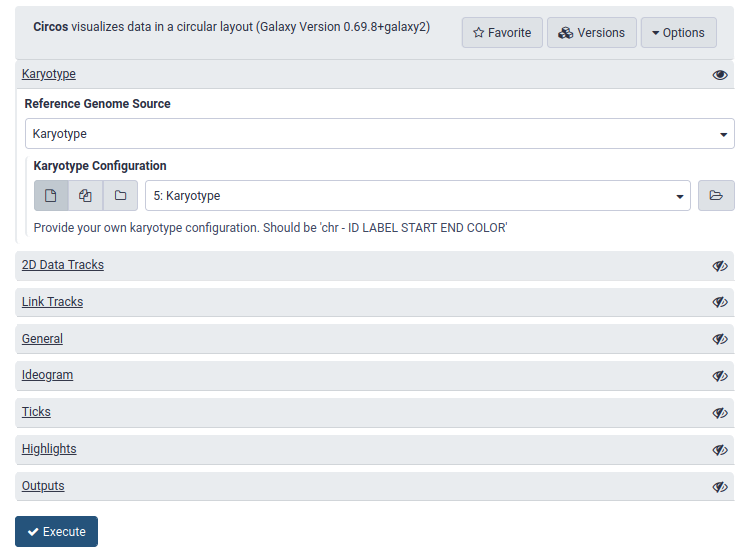
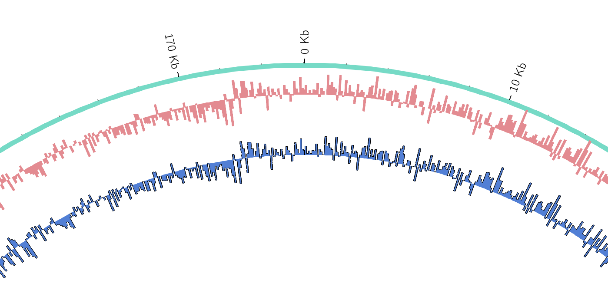
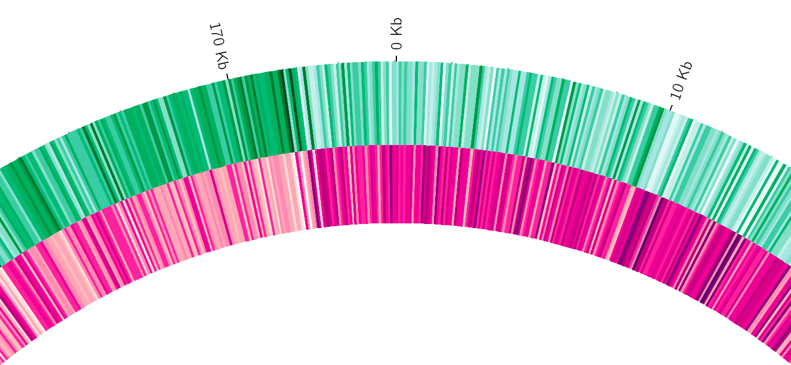
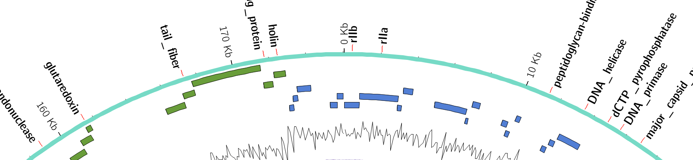
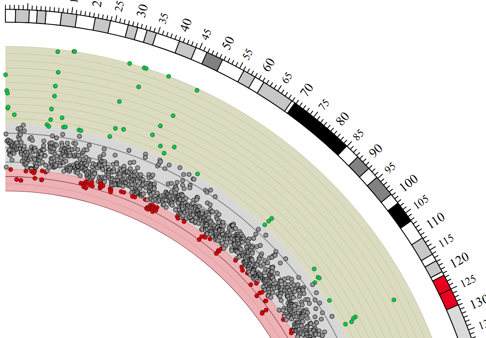
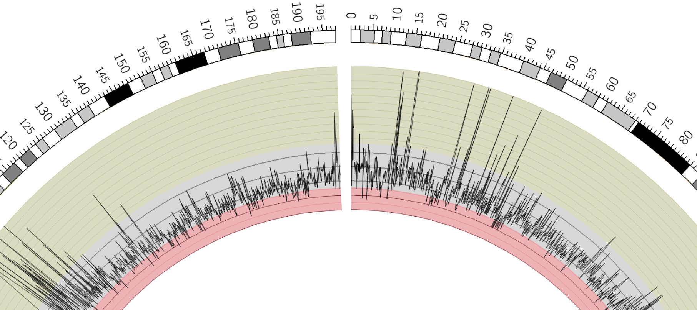
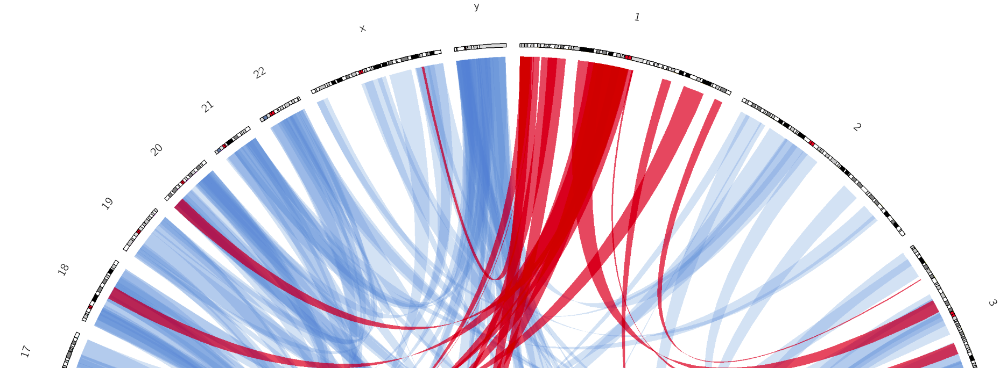

Circos
Contributors
 Helena Rasche
Helena Rasche  Saskia Hiltemann
Saskia Hiltemann
Questions
What is Circos?
How can I use Circos within Galaxy?
What are some of the different track types I can plot?
Circos for Genomics Visualisation
What is Circos?
- Circular Graphics
- Highly flexible, but also very complex configuration
- … but beautiful visualisations
- Can visualise a huge range of data types

Speaker Notes Many researchers find Circos overwhelming and complex. This tool can save them time and we will hopefully show them how to reproduce several plots from published papers.
Circos in Galaxy
- Tool that produces a Circos Plot (PNG / SVG)
- Circos is too complex to put all configuration options in Galaxy
- Option to download full configuration directory
- allows for further manual tweaking locally
- 90% done inside Galaxy, last 10% finished locally
- Option to download full configuration directory
.image-50[]
Speaker Notes Emphasize that producing production quality plots is still a lot of work. Not all configuration options available in Circos can be set in the Galaxy tool. But all the config files can be downloaded so that you can tweak the plot manually if you have circos installed on your computer
We cannot support them uploading these edited config files into Galaxy because of potential security issues (circos can shell out.)
Supported Features
- Covers most of the possibilities of Circos
- Can auto convert GFF3/BED/(big)Wig datasets into appropriate formats
- Supports common Circos features like:
- histograms
- heatmaps
- “tile” (from gff3/bed)
- line
- scatter
- ribbons
- Complex Circos visualisations made easy (Thanks Galaxy!)
Tracks: Histograms
- For data which associate a position with a value
- Can be good for
- Gene density on large genomes
- Variation density?
- GC Skew

Speaker Notes
Tracks: Heatmaps
- Similar use case to histograms
- Histograms may provide easier quantification for viewers

Speaker Notes
It can be easier to quantify differences between two values next to each other with the histogram than relying on the viewer’s ability to distinguish + quantify how far apart two colours lie on a colour scale. These can be pretty but are harder to extract data from
Tracks: Tiles
- Show genomic regions
- Great for genes on small genomes

Speaker Notes “Tile tracks are used to show spans such as genomic regions (genes, exons, duplications) or coverage elements (clones, sequence reads). Tiles will stack within their track to avoid overlap.” (circos documentation)
Tracks: Scatter
- Can be used similarly to heatmaps and histograms

Speaker Notes
Image is based off of the Circos Scatter plot lesson. All images in this tutorial should be reproducible with the Galaxy Circos tool
http://circos.ca/documentation/tutorials/2d_tracks/scatter_plots/lesson
Tracks: Lines

Speaker Notes
Image is based off of the Circos Line lesson.
http://circos.ca/documentation/tutorials/2d_tracks/line_plots/images
Tracks: Ribbons
- Shows a relationship between two regions
- On the same chromosome or on different ones
- Great for synteny mapping or other regional interactions

Speaker Notes
This plot highlights all interactions coming from, or going to chr1.
This plot was generated from a set of random links. The circos-tools package includes a randomlinks tool that will generate these files. There is no galaxy wrapper for this tool.
Circos: An iterative process!
- Because of its complexity, creating a Circos plot is often an iterative process
- Build your plot one step at a time, check the output regularly!
.image-40[ ]
]
Key Points
- Circos is very powerful, but also very complex
- Creating plots is an iterative process
- The full configuration directory can be downloaded from Galaxy to be further tweaked locally
Thank you!
This material is the result of a collaborative work. Thanks to the Galaxy Training Network and all the contributors! This material is licensed under the Creative Commons Attribution 4.0 International License.
This material is licensed under the Creative Commons Attribution 4.0 International License.